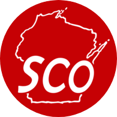
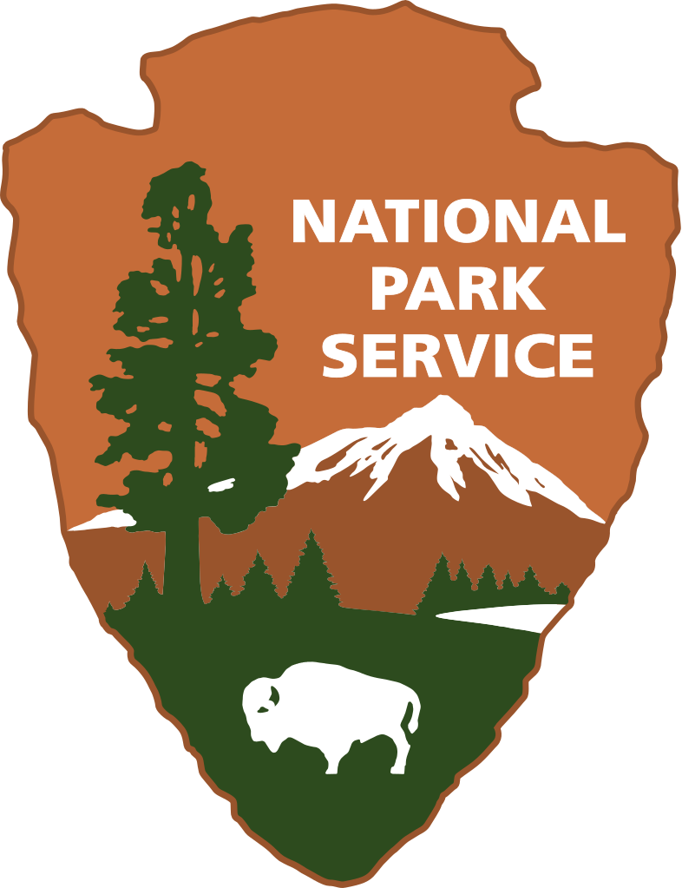

Education
University of Wisconsin–Madison
Master's in Cartography & GIS Anticipated May 2021
University of Wisconsin–Oshkosh
Certificate in GIS May 2019
University of Wisconsin–Madison
B.S. Wildlife Ecology & Management
Certificate Environmental Studies May 2013
Work Experience

Wisconsin State Cartographer's Office
GIS Developer
January 2020-Present | Madison, Wisconsin
- Process and analysis geospatial data with GIS tools like ArcGIS, Python, ArcPy, and QGIS
- Develop web applications through JavaScript, CSS, HTML languages and code libraries/framworks such as Leaflet.js, D3.js, jQuery, Bootstrap, Carto DB, and Mapbox
- Create and maintain online interactive web maps and applications per client and project requirements using web-based programming
- Utilize Esri ArcMap and ArcGIS Pro to create, edit, query, calculate, and verify GIS data layers in formats such as geodatabases, shapefiles, and geojsons to export to web services
- Write Python scripts to process files, data, and perform web API data queries with packages like ArcPy and GeoPandas
- Research additional coding frameworks and libraries that could be incorporated into current and future SCO work projects
Wisconsin Center for Education Research
Technical Services - Student Help Desk Support
Oct 2019-Apr 2020 | Madison, Wisconsin
- Resolved first level technical support calls and walk-ins
- Provided first level hardware and software troubleshooting
- Performed operating system reinstalls/reimages and data backups for Windows and Mac OS
- Managed active directory for new account setup, password resets, and assigning operating units
- Installed software security updates
- Setup new computer, printer and conference room equipment
Department of Information Technology: UW Oshkosh
Device Support - Lead Intern Technician
Feb 2018-Aug 2019 | Oshkosh, Wisconsin
- Provided phone and in-person technical support for all university staff and students with technology related issues and questions
- Installed and upgrade computer hardware and software for departments and staff
- Troubleshooted and diagnosed a variety of hardware, software, and network related issues for departments
- Trained and provide technical assistance to other student technicians
- Analyzed computer equipment and create lifecycle replacement reports for departments
- Setup new computer equipment and advise staff on recommended equipment to fill their needs
- Documented, maintained, organized, and cleaned computer equipment and storage facilities managed by IT
- Reviewed, prioritized and resolved IT Helpdesk issue requests
Department of Geography: UW Oshkosh
STEP Lab Assistant for GIS courses
Sept 2018-Dec 2018 | Oshkosh, Wisconsin
- Assisted with lesson planning and coursework organization in 3 separate GIS courses
- Instructed students with GIS techniques and troubleshoot software issues on ArcGIS Online, Arc Map, ArcGIS Pro, and ArcGIS Apps
- Graded student’s lab exercises and provide feedback on assignments
United States Fish & Wildlife Service: RI NWR Complex
Biological Science Technician
April 2017-Oct. 2017, March 2015-Nov. 2015 | Charlestown, Rhode Island
- Supported the management and monitoring of endangered shorebirds on federal and private land
- Lead the Shorebird Intern Field Crew instructing daily tasks and provided leadership, training and knowledge to the interns and other volunteer groups for the work being done on refuge projects
- Conducted population surveys of protected shorebird species, located and delineated nesting territories, located nests, and monitored nesting productivity through GPS and detailed notes
- Maintained working relationships with landowners, local communities and recreational beach visitors to support the goals of the Piping Plover Recovery Plan through ongoing communication and public outreach activities
- Collected and maintained spatial and tabular data on various refuge projects and provided preliminary assessment of information collected through Microsoft Excel and ArcGIS
- Captured endangered shorebirds to equip individually unique bands and transmitters so that they could be tracked with handheld telemetry equipment and permanent radio tower receivers along the Atlantic Coastline to establish daily behavior locations and long-term migration routes
- Established prohibited areas to the public on the beaches to protect important breeding areas, erected predator exclosures around vulnerable nests and documented disturbance factors affecting reproductive stress
- Worked on saltmarsh restoration projects by digging drainage ditches, establishing Sediment Erosion Tables, collecting native grass seeds, and planting native shrubs all to counter sea level rise

National Park Service: Grand Teton National Park
Biological Science Technician
April 2016-September 2016 | Jackson, Wyoming
- Monitored, protected and documented productivity of avian species including Peregrine Falcon, Bald Eagle, Great Gray Owl, Osprey, Great Blue Heron, Long-billed Curlew, and Trumpeter Swan
- Compiled monitored bird data with Microsoft Access and analyzed for the Parks annual report
- Navigated in remote mountainous/forested backcountry terrain to conduct daily duties through maps, compass and GPS
- Coordinated the breeding bird point count survey for Grand Teton NP
- Created and compiled a bird guide specific to Grand Teton NP
- Conducted population surveys of Greater Sage Grouse and Sharp-tailed Grouse
- Tracked Great Gray Owls, American Kestrels and Harlequin Ducks and assisted in banding projects of adults through various trapping techniques
United States Fish & Wildlife Service: RI NWR Complex
Biological/Piping Plover Intern
April 2014 – October 2014 | Charlestown, Rhode Island
- Surveyed beaches for nests of endangered shorebirds
- Monitored and collected data on the population numbers, breeding pairs, nesting habits, nest productivity and nesting disturbances of the protected bird species through GPS and detailed notes
- Coordinated shorebird censuses along RI coastal beaches for the International Shorebird Survey
- Established prohibited areas to the public on the beaches to protect important breeding areas and erected predator exclosures around vulnerable nests
- Educated landowners and the general public of the laws and restrictions that protect wildlife
- Compiled and analyzed collected Piping Plover data in Excel
- Conducted vegetation transect surveys and Nekton surveys within NWR salt marsh property